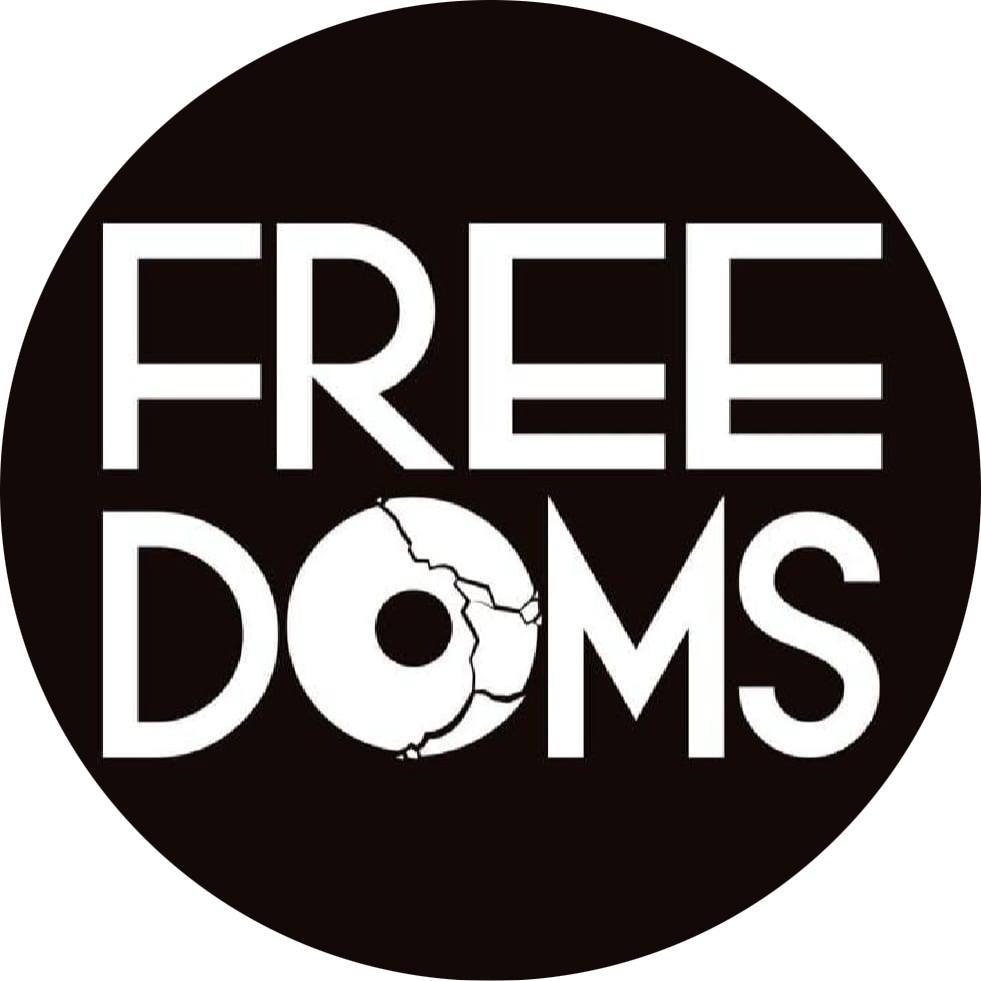
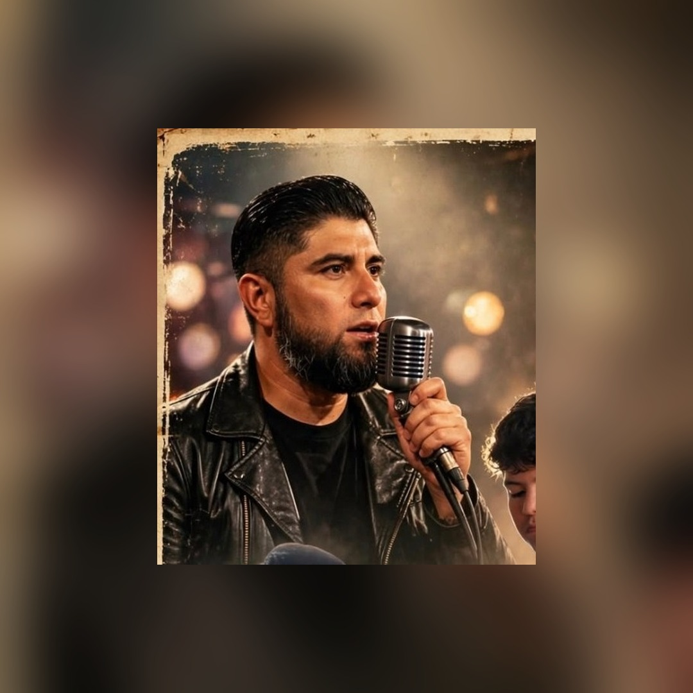
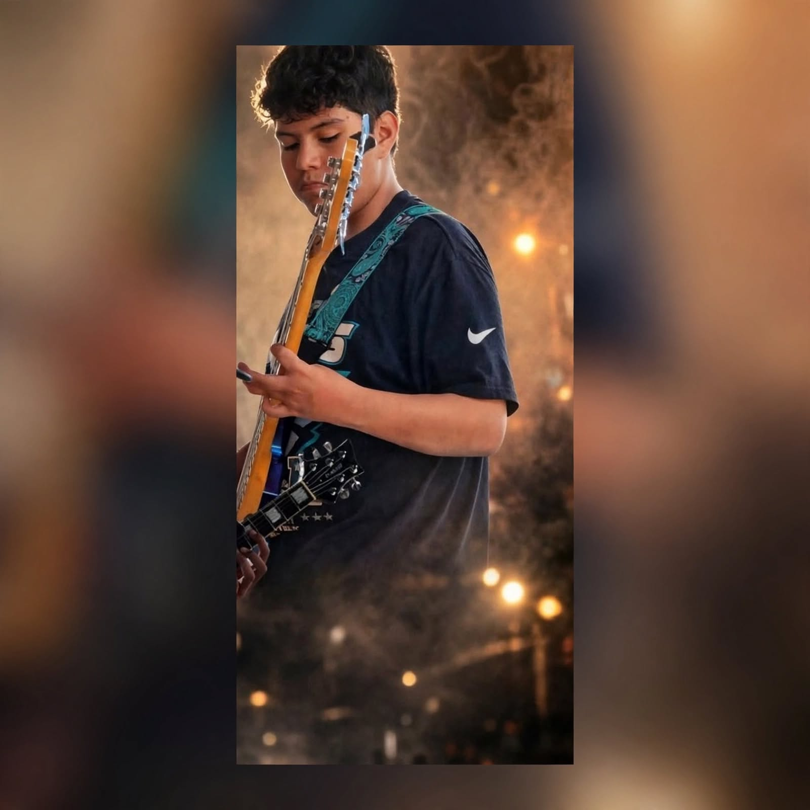
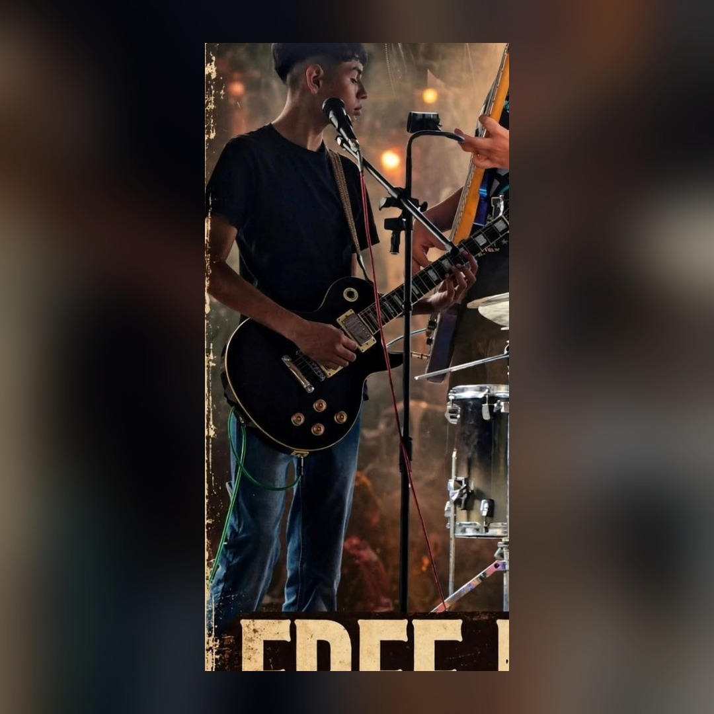
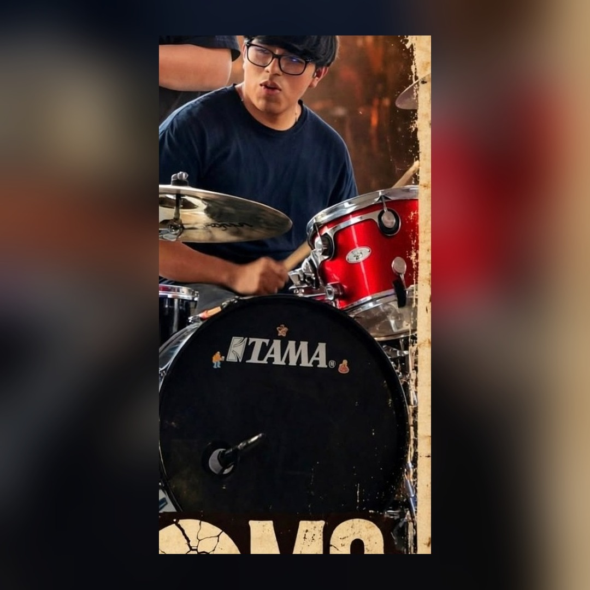

Rock hecho en familia. Del barrio para el barrio.
Facebook - FREEDOMS YouTube @freedomssandoval WhatsApp Contrataciones 56 6727 5202FREEDOMS nació en Santa María Ozumbilla, Tecámac, con los primos Fer, Luis y Héctor. Después llegó Erick en la voz y Hernán en teclados. Hernán salió, luego Erick, Leonel Castillo de Why Not? apoyó en guitarra, y finalmente Guillermo Sandoval entró como vocalista, formando la alineación actual: una banda de familia.

Vocalista

Bajo

Guitarra

Batería
Erick Sandoval - Voz • Hernán - Teclados • Leonel Castillo - Guitarra emergente
Gracias por ser parte de la historia.
Viernes 27 de Noviembre - Presentación en vivo - Evento privado
25 Oct 2026 - Plaza Cívica de San Pablo Tecalco - Feria del Pan de Muerto - Entrada libre
¿Quieres a FREEDOMS en tu evento?
Cotizar por WhatsApp